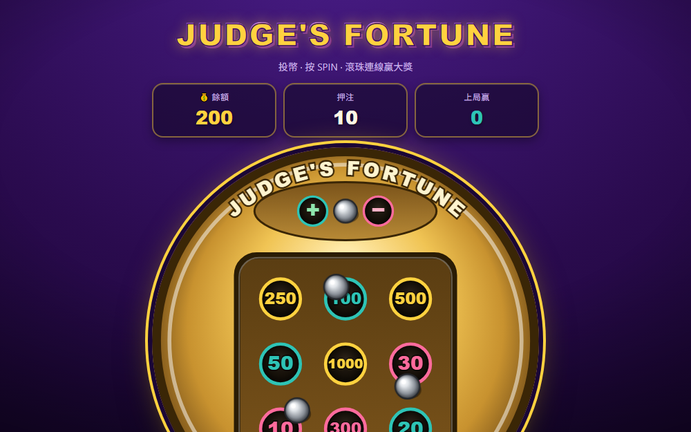
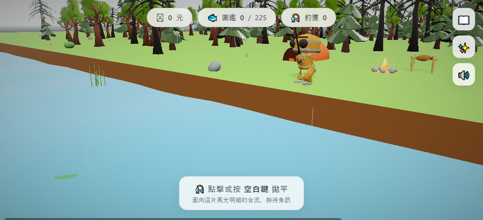
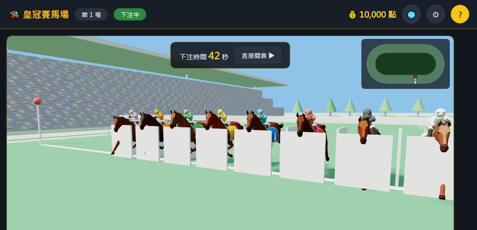
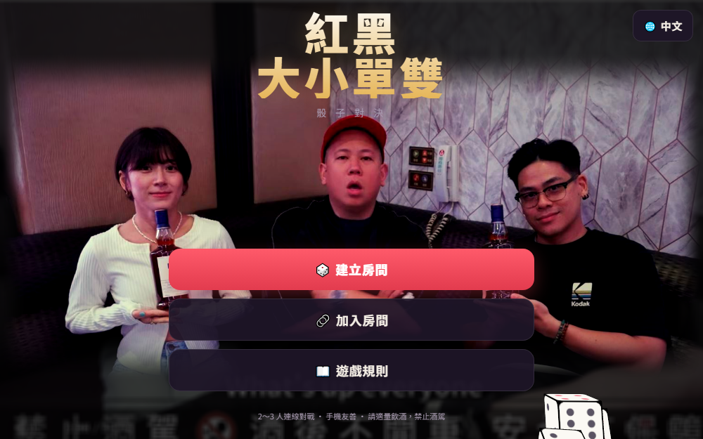
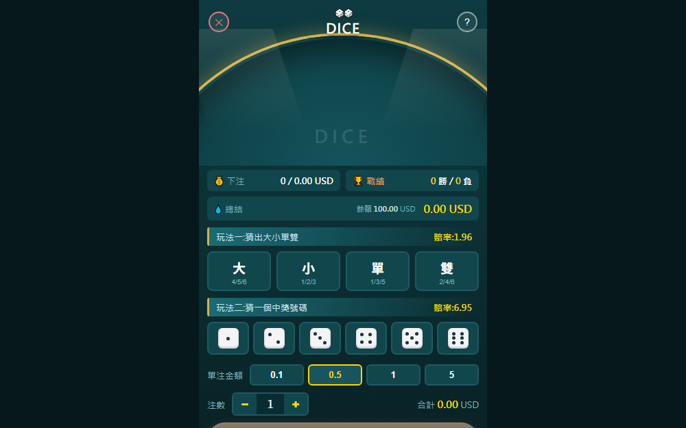
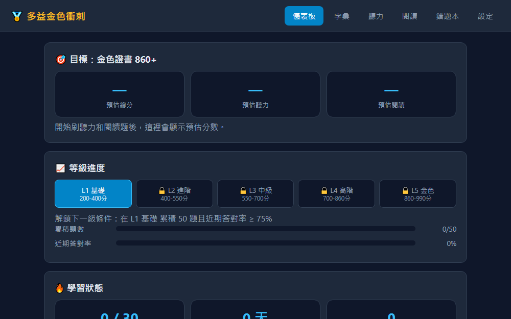
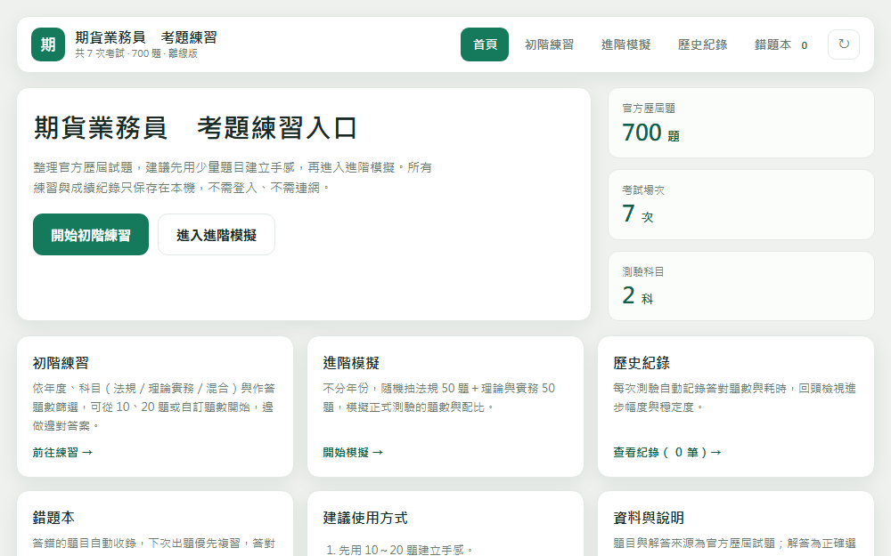

PORTFOLIO · 作品集PORTFOLIO / TAIPEI, TAIWAN
I build game, blockchain & AI‑assisted backends.
15+ 年資深工程師，作品橫跨桌面軟體、跨平台 App、 遊戲後端到區塊鏈系統，技術棧涵蓋 C++ / C# / Golang / Java / Solidity。 近年轉型 AI 應用架構師，把 AI-assisted 開發實際落地為團隊的交付能力。
A 15+ year senior engineer whose work spans desktop software, cross-platform apps, game backends and blockchain systems — across C++ / C# / Golang / Java / Solidity. Now an AI Application Architect, turning AI-assisted development into real, shippable team output.
- 15+Years年資
- 5+Languages語言
- 4Chains多鏈
- 10xAI-assistedAI 效率

Available for projects開放接案中01 — SELECTED WORK
Live Demos線上作品 · 可直接遊玩Live demos · play instantly
以下皆為可直接開啟的線上專案，純前端／可離線運行，點擊卡片即可啟動。
Every project below runs live in the browser — front-end only and offline-capable. Tap a card to launch.

01 ARCADE GAMEJudge's Fortune法官運勢盤
Judge's FortuneBall-drop fortune game
改編自古董法國機械賭運盤「Le Juge de Paix」的滾珠遊戲：3 顆鋼珠落入 3×3 孔位， 依連線、同色與獎勵珠計算賠付。
A ball-drop game adapted from the antique French fortune machine “Le Juge de Paix”: three steel balls land in a 3×3 grid, with payouts from lines, colors and a bonus ball.
Launch ↗
02 CANVAS GAME清流釣り河口釣魚 · Fishing
River Fishing清流釣り
以和紙質感打造的療癒系釣魚小品，Canvas 即時渲染、觸控拋竿， 手機與桌機皆可遊玩的純前端體驗。
A relaxing fishing vignette with a washi-paper aesthetic — real-time Canvas rendering, tap-to-cast, playable on both mobile and desktop, fully front-end.
Launch ↗
03 PROVABLY FAIR皇冠賽馬場Crown Racecourse
Crown Racecourse皇冠賽馬場
Provably Fair 賽馬機：賽前公開賽果種子的 SHA-256 鎖定、賽後公開驗證； 以 Plackett-Luce 公式計算賠率，支援房主端 P2P 多人連線，無需後端。
A provably-fair racing machine: the result seed is SHA-256 committed before the race and revealed after for verification. Odds use the Plackett-Luce model, with host-side P2P multiplayer and no backend.
Launch ↗
04 MULTIPLAYERDice Duel紅黑大小單雙 · 多人對戰
Dice DuelRed / Black · Multiplayer
2–3 人即時連線骰子對戰，採房主端 P2P / WebRTC 架構建立與加入房間， 手機友善介面，即時同步骰子狀態與開盅結果。
Real-time 2–3 player dice duels over host-side P2P / WebRTC rooms. Mobile-friendly UI with live syncing of dice state and reveal results.
Launch ↗
05 CLASSIC GAMEDice骰子大小單雙
DiceBig / Small · Odd / Even
經典骰子下注遊戲，實作大小單雙與猜號兩種玩法、賠率計算與下注流程， 純前端可離線運行。
A classic dice betting game with big/small, odd/even and number-guess modes, full odds calculation and bet flow — front-end only and offline-ready.
Launch ↗
06 LEARNING TOOLTOEIC Gold多益金色衝刺
TOEIC GoldTOEIC practice system
原創多益風格題庫練習系統，涵蓋字彙、聽力、閱讀三大模組， 支援錯題本自動收錄與個人化設定，純前端離線運行、免登入。
An original TOEIC-style practice system covering vocabulary, listening and reading, with an automatic mistake log and personalized settings — offline, front-end, no login.
Launch ↗
07 LEARNING TOOL期貨業務員考題Futures Exam Practice
Futures Exam Practice期貨業務員考題
依官方歷屆試題建立的離線練習系統，支援依年度／科目篩選、進階模擬測驗、 歷史紀錄與錯題本自動收錄，資料僅存於本機瀏覽器。
An offline practice system built from official past exams — filter by year/subject, advanced mock tests, history and an automatic mistake log, with all data kept in your browser.
Launch ↗更多專案（NFT / DeFi / 預測市場 / 錢包系統等 18+）： cake.me/me/fanntone/portfolios ↗
More projects (NFT / DeFi / prediction markets / wallets, 18+): cake.me/me/fanntone/portfolios ↗
02 — ABOUT
Profile & Stack關於我 · 技術棧About · Stack

職涯橫跨多領域：早期投入 IT 基礎建設與 EDA / GUI 工具開發，並以 C++ / Qt 交付桌面與 Win32 原生軟體；接著以 C# WPF / Xamarin、原生 Java Android 打造跨平台應用，深諳 ASP.NET / IIS 後台部署，亦曾擔任 ASP.NET 技術講師。桌面、Web、行動三端皆能獨立交付。
My career spans many domains: early on, IT infrastructure and EDA / GUI tooling, plus desktop and Win32 native software in C++ / Qt; then cross-platform apps with C# WPF / Xamarin and native Java Android, with deep ASP.NET / IIS deployment — and a stint as an ASP.NET instructor. Desktop, web and mobile, all delivered independently.
近年深耕遊戲後端與區塊鏈系統，作品涵蓋 NFT、DeFi、預測市場與錢包， 橫跨 Ethereum、Solana、EOS、Tron 多鏈，並與澳洲、英國、香港團隊跨國協作。 如今以 Claude Code、Codex 帶領接案團隊，把原估 7 天的功能模組壓縮到數小時完成、 交付週期縮短 6–7 成。
In recent years I've focused on game backends and blockchain — spanning NFTs, DeFi, prediction markets and wallets, across Ethereum, Solana, EOS and Tron, with teams in Australia, the UK and Hong Kong. Today I lead a freelance team with Claude Code and Codex, compressing modules once estimated at 7 days into a few hours and cutting delivery cycles by 60–70%.
Languages & Frameworks
Blockchain
Backend & Infra
AI-Assisted Dev & Leadership
03 — EXPERIENCE
Career Timeline精選經歷Selected roles
-
2025.9 — Present
AI 應用架構師 / 資深後端工程師 Freelancer · 接案
AI Application Architect / Senior Backend Engineer Freelancer
直接對接客戶端 CTO，管理 6 人跨職能團隊、3 個並行案。主導白牌娛樂平台後端（串接 10 間遊戲廠商、2 家金流），導入 AI-assisted 工作流，個人開發效率提升 10x+。
Reporting directly to client CTOs, leading a 6-person cross-functional team across 3 parallel projects. Led the backend of a white-label gaming platform (10 game vendors, 2 payment providers) and rolled out an AI-assisted workflow that lifted personal output 10x+.
Claude Code白牌平台6 人團隊Claude CodeWhite-label6-person team -
2025.5 — 2025.8
資深後端軟體工程師 NexTeam 博思顧問（英國團隊）
Senior Backend Engineer NexTeam (UK)
3 個月內同時推進 3–4 個後端專案，獨立交付 4 案（1 進 Production、2 通過 QA/UAT），零重大 bug。
Drove 3–4 backend projects at once over three months, independently delivering 4 (1 to production, 2 through QA/UAT) with zero critical bugs.
BackendSQL / SPUK RemoteBackendSQL / SPUK Remote -
2024.12 — 2025.2
資深 Solidity 區塊鏈工程師 皆凱科技（Polymarket 類預測平台）
Senior Solidity Engineer JieKai (Polymarket-style platform)
以技術顧問角色與 CEO 密集協作，交付 2 份核心智能合約初版（含完整測試與部署）與架構文件。
Worked closely with the CEO as a technical advisor, delivering two core smart-contract drafts (with full tests and deployment) and the architecture documentation.
SoliditySmart Contract預測市場SoliditySmart ContractPrediction market -
2022.3 — 2024.9
資深後端區塊鏈工程師 鼎堯科技（澳洲團隊 · 全英文 · WFH）
Senior Backend / Blockchain Engineer DingYao (Australia · English · WFH)
獨立主導 4 個 NFT 專案完整生命週期（合約設計 → 部署 → 上線），並交付 1 個 Solana 遊戲平台（含後台、監控、資料庫）。
Independently owned the full lifecycle of 4 NFT projects (contract design → deployment → launch) and delivered a Solana game platform (admin, monitoring, database).
NFT ×4Solana全英文團隊NFT ×4SolanaEnglish team -
2021
資深後端工程師 星鏈 · 智眾（香港 Tron 錢包）· 怡和
Senior Backend Engineer XingLian · ZhiZhong (HK Tron wallet) · YiHe
搭建遊戲平台伺服器與微服務架構、錢包串接一次通過測試零 bug；重構服務端、實作離線簽名機制提升錢包安全性。
Built game-platform servers and microservice architecture, passing wallet integration tests first time with zero bugs; refactored services and added offline signing to harden wallet security.
微服務WalletTronMicroservicesWalletTron -
2018 — 2020
區塊鏈工程師 / TPM 鴻鏈 · 傲勝 · 依依國際 · Freelancer
Blockchain Engineer / TPM HongLian · AoSheng · YiYi · Freelancer
設計部署多款區塊鏈遊戲與智能合約，兼顧 gas 優化與安全性；上海孵化器比賽奪冠，累計獲利約 20 ETH。
Designed and deployed multiple blockchain games and smart contracts with attention to gas optimization and security; won a Shanghai incubator competition with ~20 ETH in cumulative profit.
智能合約區塊鏈遊戲🏆 孵化器冠軍Smart ContractBlockchain games🏆 Incubator winner -
2012 — 2017
軟體工程師 閎藝 · 博發 · 知億 · 思銳
Software Engineer HongYi · BoFa · ZhiYi · SiRui
C# WPF / Xamarin 跨平台 App、原生 Java Android（Google Play 上架）、Qt + C++ / OpenGL GUI 工具、Slot 遊戲與 Dell 鍵鼠控制軟體開發。
C# WPF / Xamarin cross-platform apps, native Java Android (published on Google Play), Qt + C++ / OpenGL GUI tools, slot games and Dell keyboard/mouse control software.
C# · WPFJavaQt / C++C# · WPFJavaQt / C++
04 — CONTACT